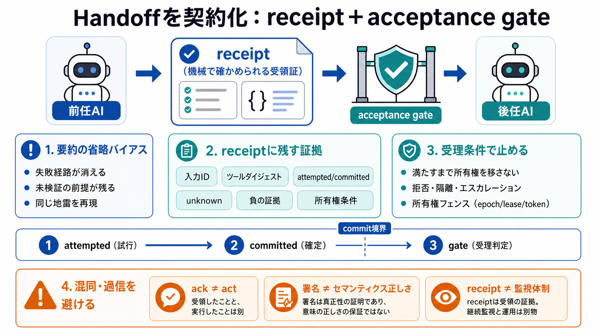

receipt（評価対象）
入力ID、ツールダイジェスト、試行/確定の副作用、未検証項目、所有権移転条件。

チャット要約ではなく、次のAIエージェントが検証し拒否できる「機械で確かめられる受領証」を使って、責任の所在と正確性を守る発想です。
チャット要約は「うまくいった点」を残しやすく、未検証の前提・未完了の分岐・失敗経路を都合よく省略します。その結果、後任が同じ地雷を再現しやすくなります（unverified loops）。
receipt（領収書／受領証）は単なる文章ではなく、入力IDやツール呼び出しダイジェスト、副作用の記録、未解決の仮定を含む構造化アーティファクトです。
重要なのは receipt だけではなく、receipt を検証して「受け入れる／拒否する」執行可能な条件（acceptance gate）までセットで設計することです。
入力ID、ツールダイジェスト、試行/確定の副作用、未検証項目、所有権移転条件。
条件を満たすまで所有権を移さない／満たなければ隔離・エスカレーション。
receiptがあっても「ack（了解/試み）と act（状態の確定）」が混ざると、安全性が崩れます。非冪等・タイムアウトが絡むと、再実行が事故になります。
書いた/実行要求した（intended）。
状態が変わった（committed）。attempted/acknowledged/committed を区別。
unknown（未知）があるなら危険です。だからこそunknownを省略せずに明示し、ownership を自動移転しない／再検証を強制して安全運用します（“知らない”を契約に含める）。
receiptがあっても前任者の書き込み権限が残ると、後任も同時に書けるレースが残ります。これを避けるには epoch／リース／検問トークンのような所有権フェンスが要ります。
前任：書けるまま／後任：書く → 同時更新。
次の不可逆操作を許される主体を機械的に固定（fence）。
署名された receipt は改ざん耐性（provenance）の証明にはなりますが、内容がセマンティクスとして正しい（実際に観測・確定した）ことまでは保証しません。検証が不可欠です。
receipt生成と副作用確定の間には競合ウィンドウが起き得ます。コミット時点を明示し、gate が満たさない限り ownership 移転を止めます。
試行を記録（試した事実）。
副作用の確定を記録（状態変化）。
受理可否を機械的に判定。
receiptに「拒否された経路」「未検証・拒否された分岐」を含めないと、監査が“きれいな言い訳”になります。再生可能性（replayability）と負の証拠が重要です。
receiptのフォーマットより、どこで検証し誰が止めるか（拒否・異議申し立て・リカバリの執行主体）が価値を決めます。監視体制がないと責任が装飾化します。
入力ID・所有権条件・ツールダイジェストから後で判定可能。
integrity（改ざん耐性）と completeness（必要情報の網羅）を分けて考える。
導入判断では receipt の項目数より先に「受理条件を機械的に満たせるか／満たせない場合にどう止めるか」を最優先で確認するのが現実的です。receiptは“紙芝居”にならないための土台になります。
acceptance gate・所有権フェンス・commit境界・unknown/負の証拠。
ack/act混同、署名過信、二重所有のレース、拒否経路の欠落。
No references found